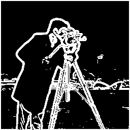
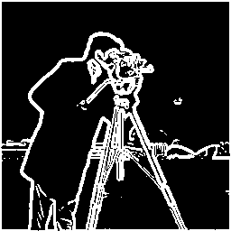

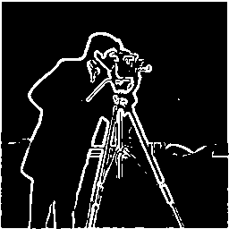
Yicheng Xu
A convolution flips the kernel, slides it over the image, and at every pixel multiplies the overlapping
values and adds them up. To keep the output the same size as the input, I pad the image with zeros first.
For a kernel of height kh, I add kh // 2 rows on top and kh - 1 - kh // 2
rows at the bottom (the same for columns).
This section uses numpy only.
import numpy as np
def add_zero(im, top, bottom, left, right):
return np.pad(im, ((top, bottom), (left, right)))
# four for loops
def con_loops(im, kernel):
kh, kw = kernel.shape
k = kernel[::-1, ::-1] # flip the kernel
top, left = kh // 2, kw // 2
padded = add_zero(im, top, kh - 1 - top, left, kw - 1 - left)
h, w = im.shape
out = np.zeros((h, w))
for i in range(h):
for j in range(w):
total = 0.0
for u in range(kh):
for v in range(kw):
total += padded[i + u, j + v] * k[u, v]
out[i, j] = total
return out
# two for loops: loop over the kernel, shift the whole image each time
def con_loops_2(im, kernel):
kh, kw = kernel.shape
k = kernel[::-1, ::-1]
top, left = kh // 2, kw // 2
padded = add_zero(im, top, kh - 1 - top, left, kw - 1 - left)
h, w = im.shape
out = np.zeros((h, w))
for u in range(kh):
for v in range(kw):
out += padded[u:u + h, v:v + w] * k[u, v]
return out
Then I read a picture of myself as grayscale (896 × 640), built a 9 × 9 box filter
(every entry 1/81), and compared my two functions with scipy.signal.convolve2d:
box = np.ones((9, 9)) / 81
out_4 = con_loops(im, box)
out_2 = con_loops_2(im, box)
out_scipy = convolve2d(im, box, mode = "same",
boundary = "fill", fillvalue = 0)
Dx = np.array([[1, 0, -1]], dtype = np.float64)
Dy = np.array([[1], [0], [-1]], dtype = np.float64)
out_dx = con_loops_2(im, Dx)
out_dy = con_loops_2(im, Dy)
Runtime. On my laptop, the four-loop version took 19.069 s, the two-loop version 0.116 s, and scipy 0.095 s. All three give the same image. The four-loop version multiplies and adds every pixel with every kernel entry one at a time in Python, so it is the slowest. The two-loop version only loops over the 81 kernel entries and handles the whole image at once with numpy each time, so it is about 160 times faster. scipy does the whole convolution in compiled code and is still a little faster than the two-loop version.
Boundaries. My functions pad with zeros, which is the same as scipy's
mode = "same", boundary = "fill", fillvalue = 0; that is why the outputs agree.
Zero padding treats everything outside the photo as black. My background is white, so the box-filtered image gets
a thin dark frame along its border, and Dx and Dy show lines along the image border that are
not real edges. I use the same zero padding in all later parts, so later results show the same kind of frame
along the image border.
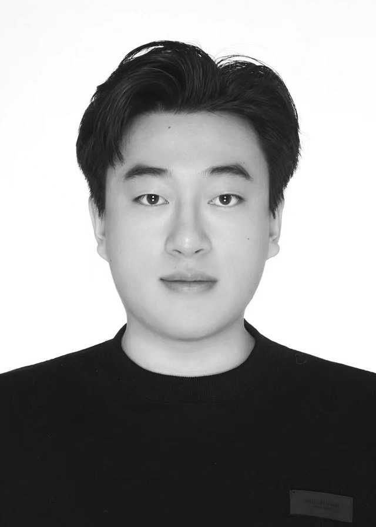
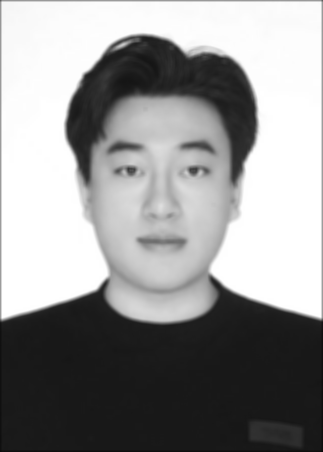
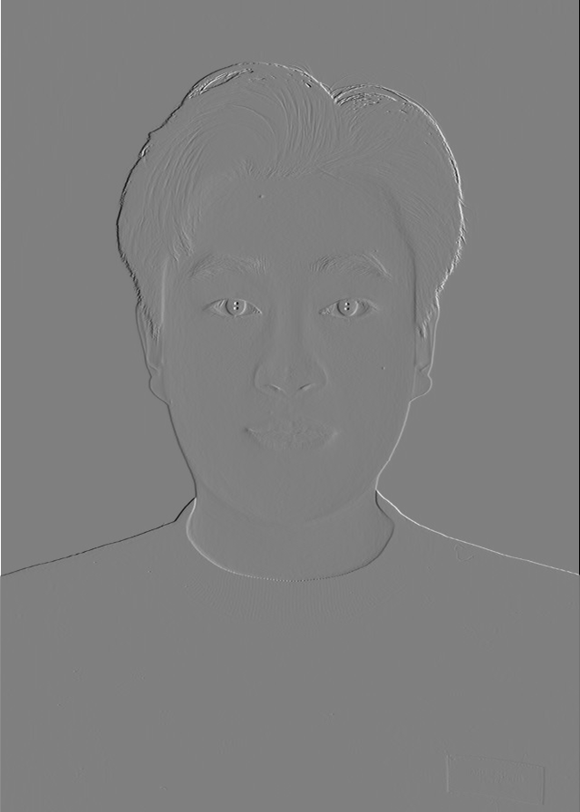
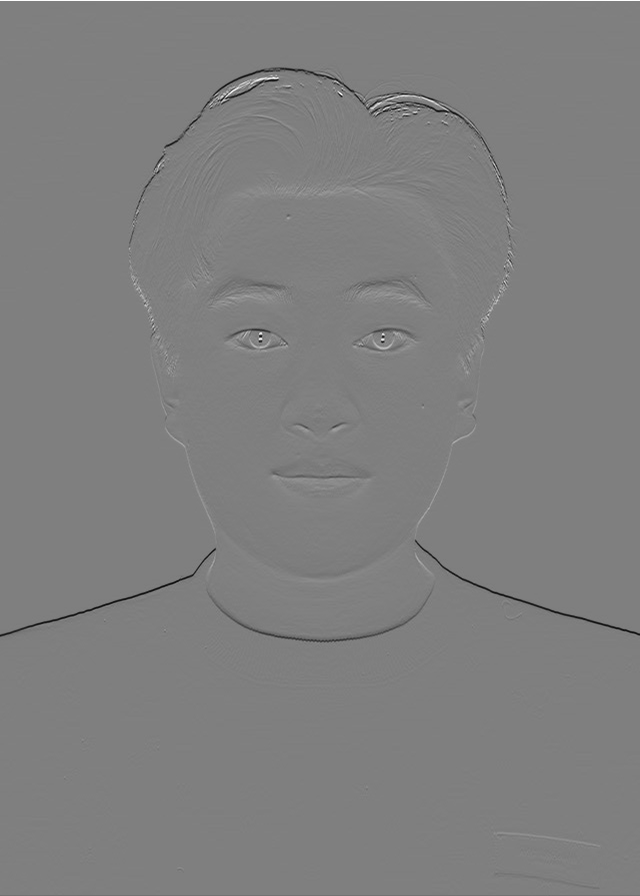
I convolve the cameraman image (256 × 256) with Dx = [1, 0, −1] and Dy = [1, 0, −1]T. The gradient magnitude is sqrt(dx² + dy²).
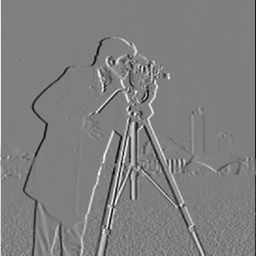
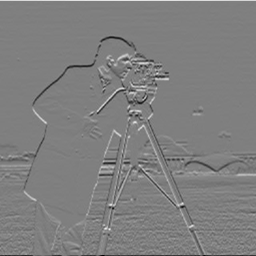
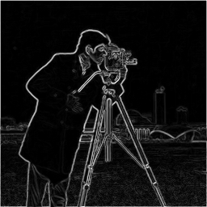
To get an edge image, I mark a pixel as an edge when the gradient magnitude is above a threshold. Not counting the frame along the border, the largest gradient magnitude is about 0.97, so I tried thresholds from about 10% to 30% of it:
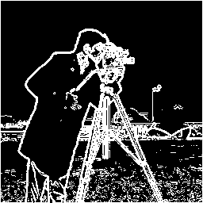
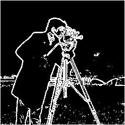
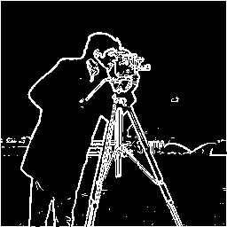
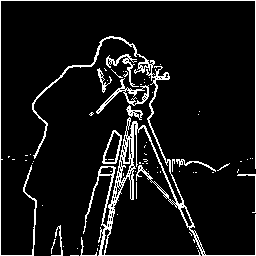
Choice: 0.25. I started at 0.10, where the grass turned into white speckles. Raising the threshold to 0.15 and 0.20 removed part of the speckles, but the grass was still full of them. At 0.25 most of that noise was gone, while the outline of the man, the camera, the tripod legs and the buildings on the horizon remained. At 0.30 the lower edge of the coat and parts of the buildings started to break up, so I went back to 0.25. A few grass speckles are still left at 0.25, but a higher threshold that removes them would also remove real edges.
I build a 1D Gaussian with cv2.getGaussianKernel(7, 1) (size 7, σ = 1) and take its outer
product with itself to get a 7 × 7 2D Gaussian.
Choosing the Gaussian. I tried three Gaussians, each with a kernel about 6σ wide: 3 × 3 with σ = 0.5, 7 × 7 with σ = 1 and 13 × 13 with σ = 2, and for each one the thresholds 0.08 to 0.18. With σ = 0.5 the blur was too weak: the grass was still full of speckles up to a threshold of 0.12, much like Part 1.2. With σ = 2 the edges became very thick, the camera turned into a few blobs, and once the threshold was high enough to clear the grass, the tripod legs and the buildings broke apart. σ = 1 removed the grass noise while keeping the camera and the tripod, so I used it.
Method 1: blur first, then take the derivative. I blur the image with the Gaussian, then repeat Part 1.2 on the blurred image.
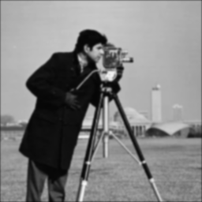
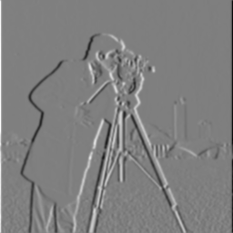
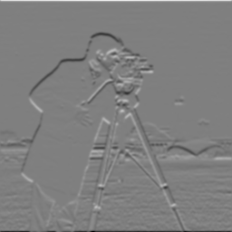
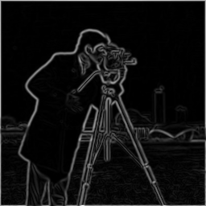
Blurring spreads each edge over several pixels, so the gradients become weaker. With the threshold of 0.25 from Part 1.2, most of the buildings and parts of the camera disappeared. After blurring, the largest gradient magnitude (again not counting the border frame) drops to about 0.55, so I tried lower thresholds in the same range relative to it:



Choice: 0.15. At 0.08 and 0.10 there were still short lines in the grass and around the buildings. At 0.12 fewer remained. At 0.15 the grass was clean, and the man, the camera, the tripod and the horizon were still there. At 0.18 most of the buildings on the horizon and the lower edge of the coat disappeared, so I kept 0.15.
Differences from the finite difference result.
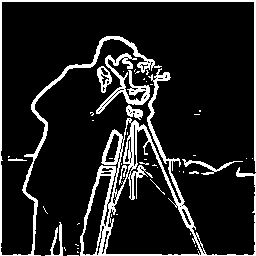
Method 2: one convolution with a DoG filter. I convolve the Gaussian with Dx and Dy to get the DoG filters, then convolve the image with each DoG filter once. The filters:
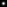
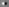
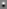
Verification. The two edge images at threshold 0.15 look the same. The code also compares the two results away from the border and prints a largest difference of about 10−16, which is only rounding.
The gradient direction is the angle of the vector (dx, dy). I use the DoG derivatives because they are less
noisy. I was not allowed to use built-in angle functions such as np.arctan2, so I compute the
angle myself:
Then I build an HSV image: hue = the angle (one full turn of the color wheel = 360°, a cyclic map, so −180° and 180° get the same color), saturation = 1, and value = the gradient magnitude divided by its 99th percentile (so flat areas are black and strong edges are bright).
For the brightness, I tried dividing the magnitude by its largest value, by its 99th percentile and by its 95th percentile. With the largest value most edges were dim, and the camera and the buildings were hard to see. With the 95th percentile the grass turned into bright colored speckles. The 99th percentile kept the edges bright without lighting up the grass, so I used it.
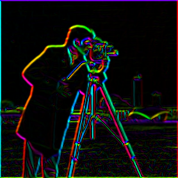
A Gaussian blur is a low-pass filter: it keeps the slow changes in an image and removes the fast ones. Subtracting the blurred image from the original leaves only the high frequencies (edges and texture). Adding some of those high frequencies back makes the image look sharper:
sharpened = I + α (I − I ∗ G)
= I ∗ ((1 + α) e − α G)
where e is the unit impulse (a kernel with a single 1 in the middle, which leaves an image unchanged). So the whole operation is one convolution with the unsharp mask filter (1 + α) e − α G. I use a 13 × 13 Gaussian with σ = 2 and convolve each RGB channel separately.
Choosing the Gaussian. I tried σ = 1 (7 × 7), σ = 2 (13 × 13) and σ = 3 (19 × 19) on the Taj Mahal with α = 1, 2 and 4. With σ = 1 only the finest pixels were boosted: the carvings got crisper, but so did the noise, and the larger shapes did not look any sharper. With σ = 3 the dome and the trees got wide bright and dark halos against the sky at α = 2 and 4. σ = 2 sharpened the carvings, the windows and the trees without wide halos at α = 1 and 2, so I used σ = 2.
Taj Mahal (300 × 300):
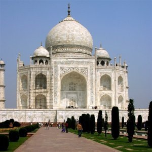
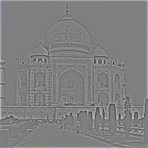
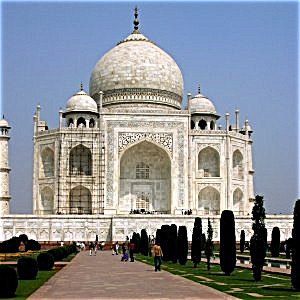
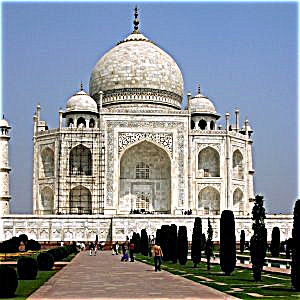
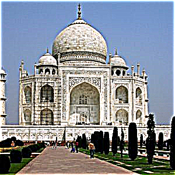
As α grows, the carvings on the building and the outlines of the trees become clearer. At α = 4 it goes too far: bright and dark outlines (halos) appear around the dome and the trees against the sky, and the noise in the original is made stronger too.
My own blurry photo (a mouse on my desk, taken out of focus):
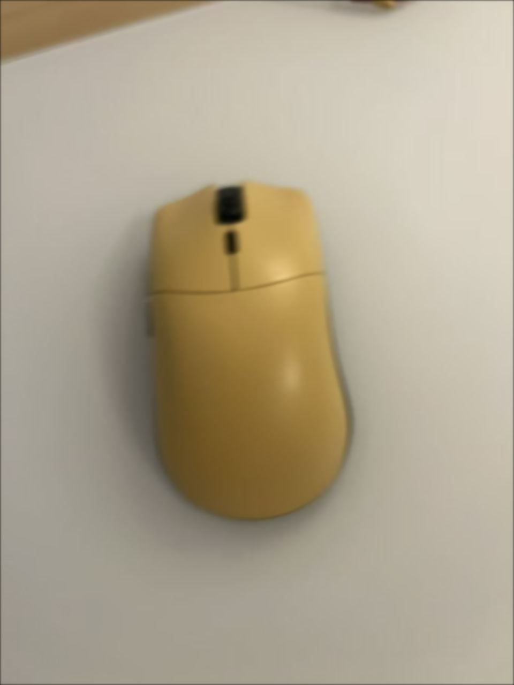
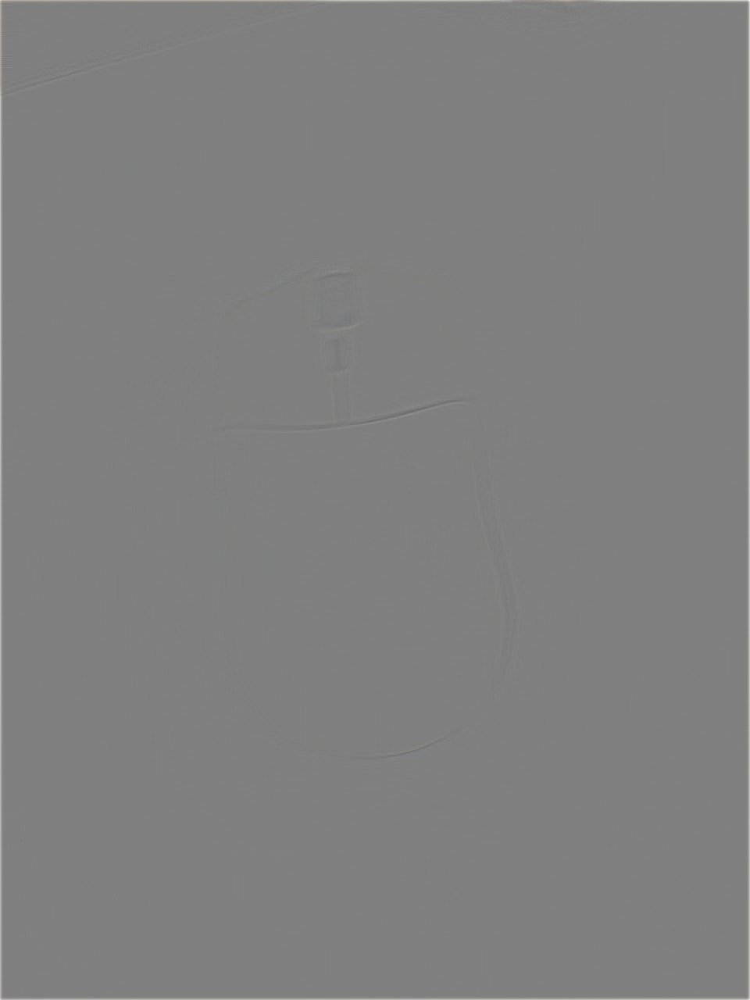
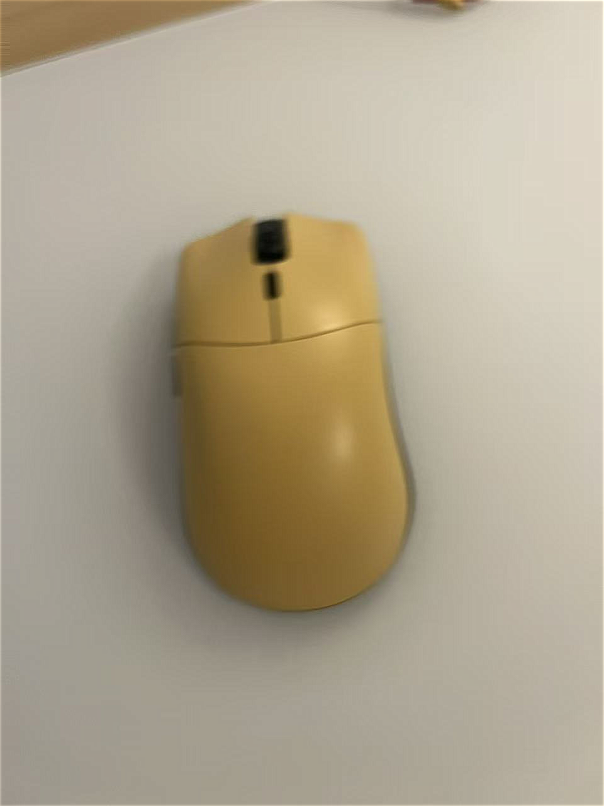
The outline of the mouse and its buttons get clearer, but the photo was very blurry to begin with. Sharpening cannot bring back detail that the camera never recorded; it only makes the existing edges stronger. At α = 4 the edge of the mouse gets a visible dark and light outline.
Evaluation: blur a sharp image, then sharpen it again. I take a sharp photo (my selfie), blur it with the same Gaussian, then apply the unsharp mask filter.
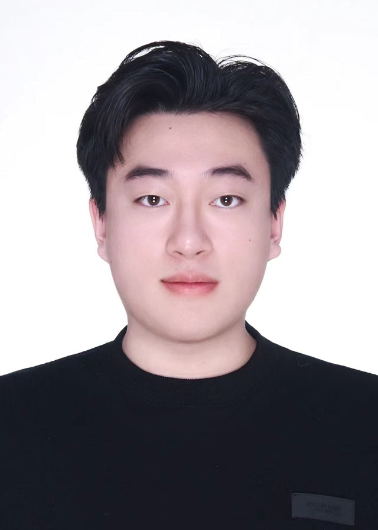
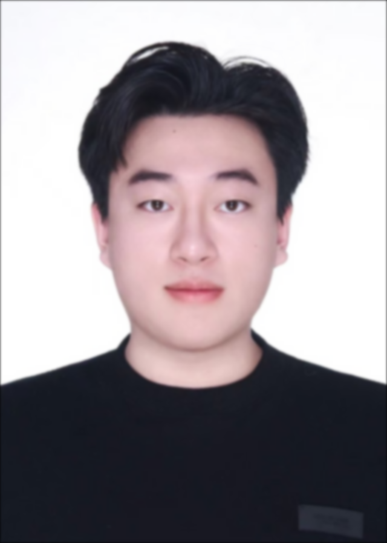
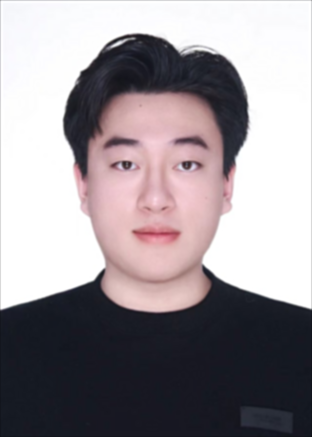
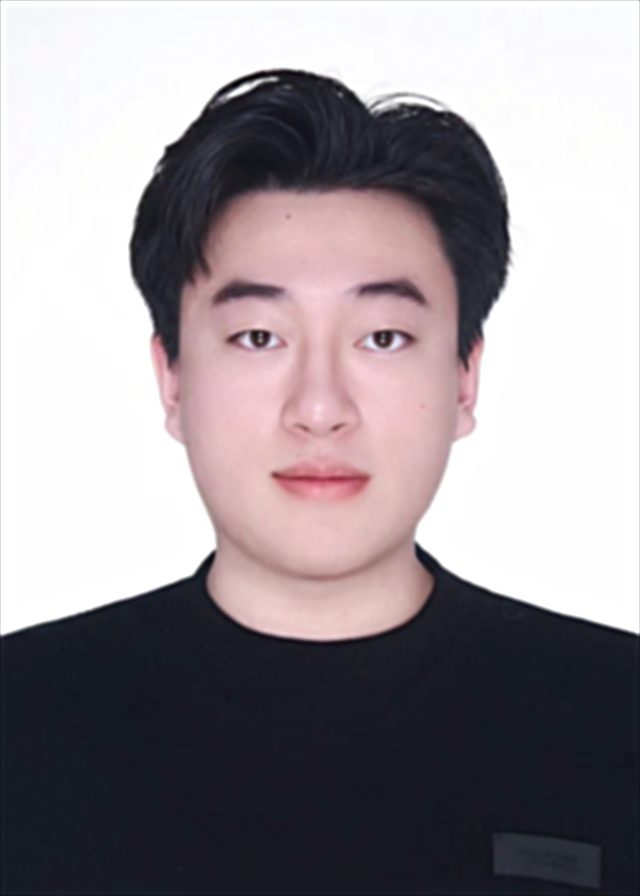
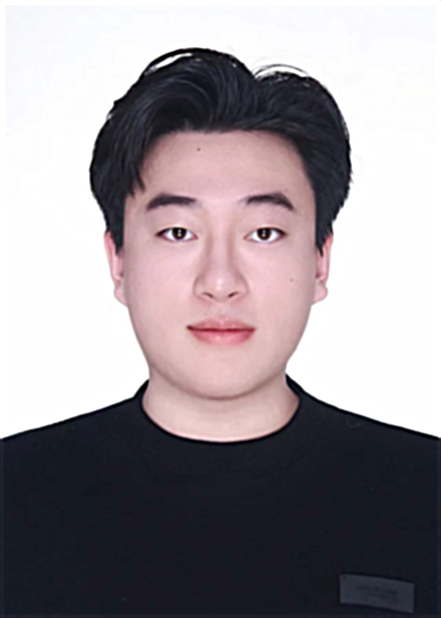
Observations. The re-sharpened images look closer to the original than the blurred one, and α = 2 looks closest. It never gets back to the original, though. The blur removed the finest details (such as single hair strands), and the unsharp mask can only boost the high frequencies that are still left. At α = 4 it goes too far: the hair and shoulders get halos that were not in the original. The re-sharpened image looks crisp, but it is not the same as the original.
Steps.
cv2.warpAffine). Then I resize both
images so the long side is 512 pixels. I tried 256, 512 and the full size (1024): at 256 Derek was only a dark
blob and Nutmeg covered him even when the image was small, and at full size Derek's face stayed sharp, so up close
I saw both faces. 512 worked best.Cutoff frequency. A Gaussian with standard deviation σ pixels has standard deviation 1/(2πσ) cycles per pixel in the frequency domain, so I use that as its nominal cutoff. σlow = 6 gives a cutoff of about 0.027 cycles/pixel for the low-pass filter, and σhigh = 3 gives about 0.053 cycles/pixel for the high-pass filter.
How I chose them. I tried several pairs on Derek + Nutmeg and looked at each hybrid at 100%, 50% and 25% size. I started with σlow = σhigh = 3: Derek's eyes and smile stayed sharp, so up close I saw two faces at once. Raising σlow to 10 went too far the other way: Derek was so blurry that even at 25% his face was hard to recognize. With σlow = 6 I then changed the high-pass side. At σhigh = 1.5 only the thinnest whiskers of Nutmeg were left, and up close Derek still won. At σhigh = 6 Nutmeg kept too much of the fur shading and was still visible at 25%. σlow = 6 and σhigh = 3 gave Nutmeg up close and Derek at 25%, so I used this pair for all three hybrids.
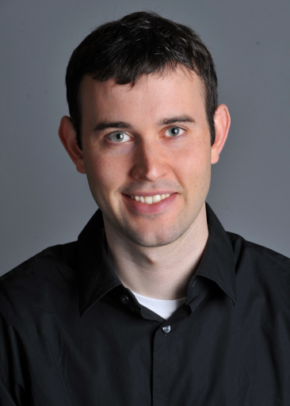
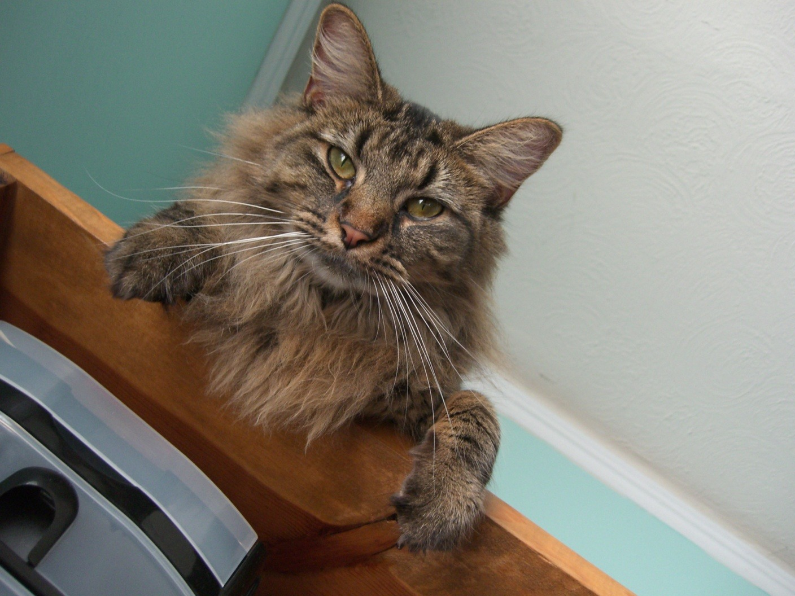
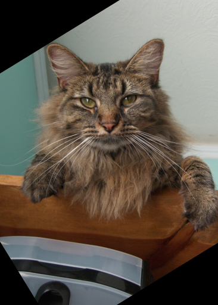
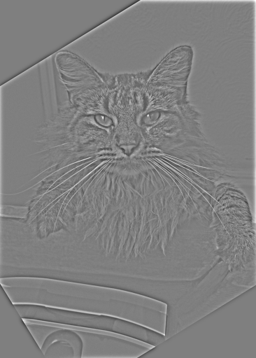
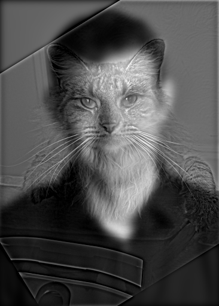
Fourier transforms (log magnitude, np.log(np.abs(np.fft.fftshift(np.fft.fft2(gray)))); the
center is frequency 0):
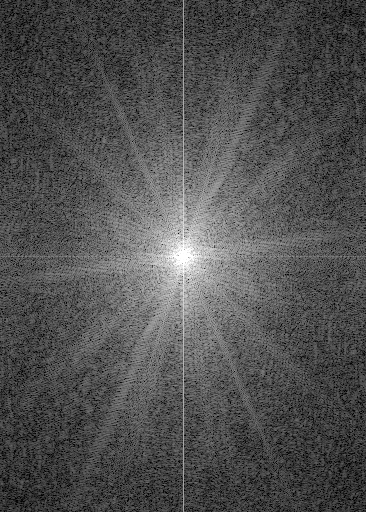
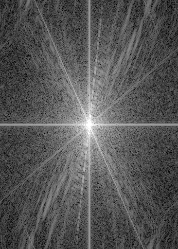
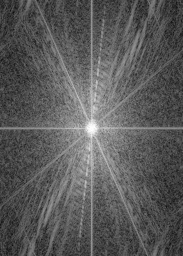
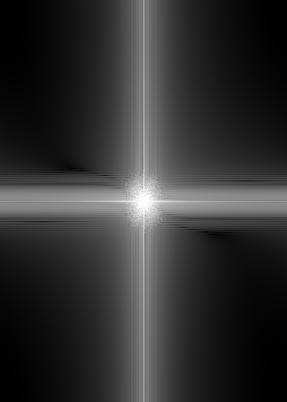
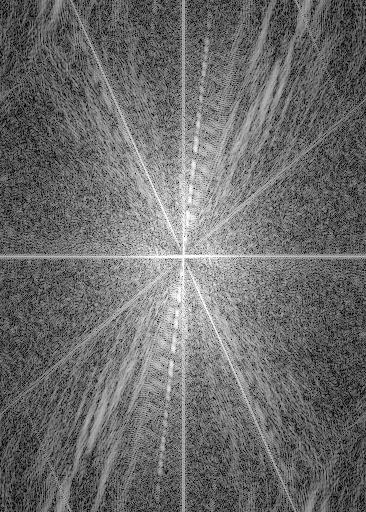
The low-passed spectrum is bright only near the center; everything far from the center is gone. The high-passed spectrum is the opposite: the bright spot in the center is gone and the outer part is kept. The hybrid's spectrum has both: Derek in the middle and Nutmeg outside.
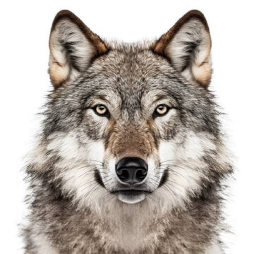
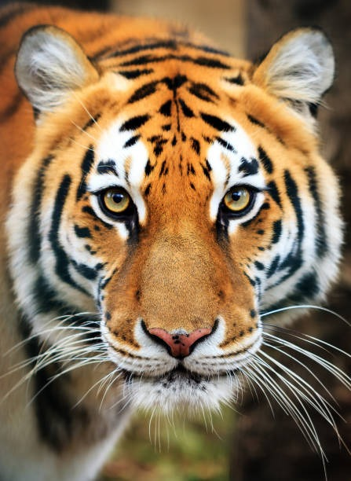
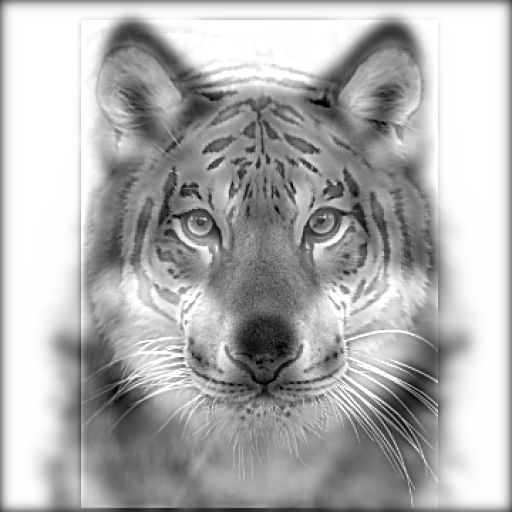
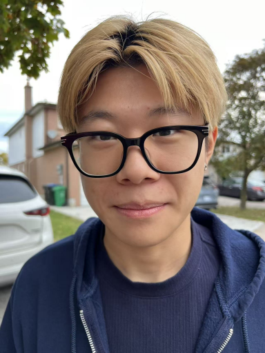
I made three color versions of the Derek + Nutmeg hybrid: color only in the low-frequency image, color only in the high-frequency image, and color in both (the gray part is the grayscale version of that image).
Which works better? Color works much better on the low-frequency image. “Color high only” looks almost the same as the grayscale hybrid, and “color low only” looks almost the same as “color both”. The reason is that color changes slowly across a picture: Nutmeg's brown fur is a large area, which is low frequency, so the high-pass filter removes most of the color and only the gray-ish fur lines and whiskers remain. Color in the low image makes the far-away interpretation (Derek) stronger, and it does not hurt the close-up view much, because up close the eye follows the sharp high-frequency lines.
A stack is like a pyramid without downsampling: every level keeps the full 740 × 530 size.
I implemented the stacks myself, with no built-in pyramid functions.
Recreating Szeliski Figure 3.42 (a)–(l). Rows are Laplacian levels 0, 2 and 4, and the last row is the sum of all levels. Columns: the apple's level multiplied by the mask's Gaussian stack, the orange's level multiplied by (1 − the same level of the mask's Gaussian stack), and the two added together.
Following the algorithm on page 230 of Burt and Adelson, with stacks instead of pyramids:
Color images are blended one RGB channel at a time with the same mask stack.
The mask is a step function: 1 on the left half, 0 on the right half.
Choosing the stack. I tried 3, 5 and 7 levels starting at σ = 2, and 5 levels starting at σ = 1 and σ = 4. With 3 levels there was still a clear vertical line between the apple and the orange. Starting at σ = 1, a faint line was still visible. With 7 levels, or starting at σ = 4, the colors mixed over almost the whole fruit: the apple half turned orange and the background above the fruit changed too. 5 levels starting at σ = 2 hid the seam while the apple stayed red and the orange stayed orange, so I used it for the stacks in 2.3 and for all blends.
I photographed my desk twice: with the lamp on and with it off. I held the phone by hand and the two photos do not line up, so I aligned them first using matching feature points. Both photos are then reduced so the long side is 600 pixels, to keep the images medium-sized as the assignment suggests.
Straight seam: the left half has the light on, the right half has it off.
Irregular mask: an ellipse around the mug. Only the mug is lit, as if a spotlight were on it.
I aligned my friend's eyes onto two points on the moon (same eye alignment as in 2.2) and used a circle over the moon as the mask.
The process, like Figure 10 in the paper. Each row is one Laplacian level (levels 0–4, then the residual), and the last row is the sum. Columns: the masked face (GR · LA), the masked moon ((1 − GR) · LB), and the two added together. Levels 0–4 are shown with gray = 0 and stretched for visibility.
I ran every blend in grayscale and in color (each RGB channel blended with the same mask stack). For the oraple, color helps: the red of the apple turns smoothly into the orange of the orange through the seam, which reads as one strange fruit; in grayscale the two halves are just a darker and a lighter gray. For the desk, color barely matters because the two photos have the same colors and only the brightness changes. For the face on the moon, the grayscale version looks more like a moon: in color, my friend's warm skin clashes with the gray moon and the black sky. So color helps when the two images have colors that should mix, and hurts when they should not.
The most important thing I learned is that the parameters are not something to guess. The size of the Gaussian, the thresholds, the cutoff frequencies and the number of stack levels all changed the results a lot, and the only way I could pick them was to try several values and compare the images side by side. I also learned how much the border matters: padding with zeros puts a frame around every result, from the edge images in Part 1 to the blends in Part 2. Finally, one simple idea runs through all of Part 2: a Gaussian blur splits an image into low and high frequencies, and sharpening, hybrid images and blending only differ in how they put those parts back together.